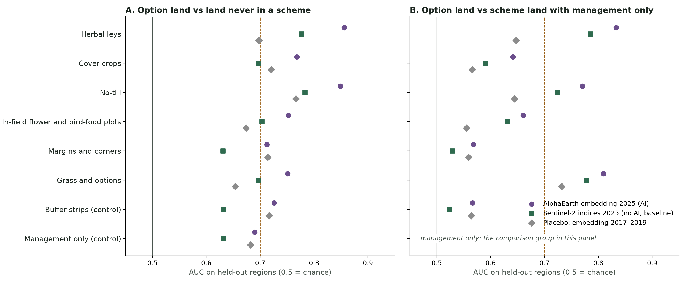

Abstract. Paying farmers for environmental actions raises two questions a satellite might answer: are the actions on the ground, and do they change how land copes with shocks? We test the first for the options of England's Sustainable Farming Incentive and Countryside Stewardship on 381,400 cereal fields, using AlphaEarth annual embeddings (an AI model) and, as a no-AI baseline, plain Sentinel-2 vegetation indices, with a design fixed in advance. The central difficulty is selection: land that joins a scheme differs from land that does not, so a detector can appear to work by recognising who joins. We measure this with a placebo, the same model applied to embeddings from 2017–2019, before any of these fields carried an option, and count only the gain over it. Against scheme land with management-only actions, and tested on regions held out of training, herbal leys are detected (AUC 0.83, gain over the placebo +0.19) and so is no-till (0.77, +0.13). Grassland options score highly (0.81) but mostly because the land was already distinctive (placebo 0.73); cover crops and in-field flower and bird-food plots fall short of the threshold; margins and corners, and the two negative controls (field-edge buffer strips and management-only actions), show no detection at all. Against land never in a scheme, every family including the controls scores about 0.7, entirely explained by the placebo: a naive evaluation would report detection of actions that a field-centre point cannot see. Embeddings beat a Sentinel-2 index baseline in every family. A placebo-adjusted metric, calibrated on the negative controls, finds a real but weaker trace of in-field plots, grassland options and cover crops as well, and none for margins and corners. The same holds with three AI embeddings (AlphaEarth, TESSERA, Presto), which beat plain Sentinel-2 indices only narrowly and for some options. In the companion pre-registered evaluation, agreement land drops about 0.08 standard deviations less in drought seasons, consistently across designs but not established once cohorts are compared within themselves; measured against a 16-season normal the placebo still carries about three fifths of the effect, so much of it reflects which land joined. Fields with the two visible options cushion droughts about twice as much as management-only scheme fields (+0.13 and +0.12 against +0.05), but the difference is well within its uncertainty.
England's farm payments have shifted from area-based support to paying for actions: soil cover, herbal leys, flower-rich margins, reduced tillage. Whether those actions happen, and whether they make land more resilient, are questions of verification and of effect. Earth observation is attractive for both because it covers every field, every year, at no cost to the farmer. [Position against the literature on monitoring agri-environment schemes, crop and cover-crop mapping from Sentinel-1/2, geospatial foundation models and embeddings, and causal evaluation with remote sensing: to be written.]
Detection studies usually compare fields with an action against fields without. When joining is voluntary, that comparison mixes two things: the action, and the kind of land and farm that chooses to join. We show that the second alone gives an apparent detection accuracy of about 0.7, and we separate the two with a pre-entry placebo and a within-scheme comparison.
Contributions: (i) a pre-registered, field-scale test of which scheme options are visible from space, across eight option families on 381,400 fields; (ii) a selection placebo and negative controls that expose how much apparent detection is selection; (iii) a comparison of a geospatial foundation-model embedding with an interpretable Sentinel-2 baseline; (iv) the link to the scheme's effect on shock resilience, evaluated under a frozen pre-registration.
Fields and options. Rural Payments Agency parcel points; cereal land as parcels in cereals in at least half of the CROME years 2016–2025 (381,400 parcels). Options from the public Countryside Stewardship layers (joined by parcel reference) and Sustainable Farming Incentive actions (snapped to the nearest parcel point within 50 m); only area-based options count. Parcels inside legacy Countryside Stewardship Scheme agreements are excluded.
Embeddings. AlphaEarth annual embeddings (64 dimensions, 10 m), 2017–2025, sampled at each parcel point. Each year's embedding summarises that year's satellite record.
Sentinel-2 indices (no-AI baseline). Not an AI model: the vegetation indices computed directly from Sentinel-2, the kind of raw satellite information the embeddings themselves are learned from. Half-monthly medians of NDVI, red-edge NDRE and NDMI, March–August, from L2A surface reflectance masked with Cloud Score+, over a 15 m buffer at each parcel point.
The design below was written down before any model was fitted [results/detection_protocol.md].
| Family | Codes | Parcels | Expected |
|---|---|---|---|
| Herbal leys | SAM3, CSAM3 | 7,935 | visible |
| Cover crops | SAM2, CSAM2, SOH2, SOH3 | 23,136 | visible in winter and spring |
| No-till | SOH1 | 7,770 | possibly (residue, stubble) |
| In-field flower and bird-food plots | AHL1, AHL2, CAHL1, CAHL2 | 17,121 | where the plot covers the field centre |
| Margins and corners | AHL3, AHL4, CAHL3, CAHL4, AB8 | 45,667 | weak: field edges |
| Grassland options | LIG1, CLIG3, IGL2, CIGL2, GS1, GS2 | 3,331 | visible: arable to grass |
| Buffer strips (negative control) | SW1, SW3, SW4, AHW6–11 | 47,105 | not visible at a field-centre point |
| Management only (negative control) | SAM1, IPM, CIPM, NUM, CNUM, PRF | 164,990 | not visible: practices and plans |
Comparisons. Positives are agreement parcels entering 2021–2024, so the option is in place for the 2025 season. Comparison A: parcels never in any scheme record. Comparison B: agreement parcels whose only options are management-only, so both groups chose to join. Each positive is matched by a random draw of comparison parcels from the same ITL1 region (positives capped at 15,000 per family).
Features. The 2025 AlphaEarth embedding; the 2025 Sentinel-2 indices (36 values; the no-AI baseline); both together. Placebo: the mean embedding of 2017–2019, before any of these parcels carried an option. Detection gain = AUC with the 2025 embedding minus AUC with the placebo.
Model and evaluation. Gradient-boosted trees (default settings, 200 iterations), one per family, comparison and feature set, evaluated by leaving one region out (eight regions; London merged with the South East) and pooling the held-out predictions. Reading rule fixed in advance: a family is detected if the 2025 embedding reaches AUC ≥ 0.70 against comparison B and gains at least 0.10 over the placebo.

| Family | B: vs management-only scheme land | A: vs never in a scheme | Verdict | |||
|---|---|---|---|---|---|---|
| Embedding 2025 | Placebo | Gain | Embedding 2025 | Placebo | ||
| Herbal leys | 0.83 | 0.65 | +0.19 | 0.86 | 0.70 | detected |
| No-till | 0.77 | 0.64 | +0.13 | 0.85 | 0.77 | detected |
| Grassland options | 0.81 | 0.73 | +0.08 | 0.75 | 0.65 | not (gain short) |
| In-field flower and bird-food plots | 0.66 | 0.56 | +0.11 | 0.75 | 0.67 | not (AUC short) |
| Cover crops | 0.64 | 0.57 | +0.08 | 0.77 | 0.72 | not |
| Margins and corners | 0.57 | 0.56 | +0.01 | 0.71 | 0.71 | not |
| Buffer strips (control) | 0.57 | 0.56 | +0.00 | 0.73 | 0.72 | not, as expected |
| Management only (control) | – | – | – | 0.69 | 0.68 | not, as expected |
Two families pass the rule. Herbal leys, which turn a whole field into a multi-species sward, are the clearest: AUC 0.83 against other scheme land and a gain of 0.19 over what the pre-entry embedding already knew. No-till is the second (0.77, gain 0.13), plausibly through residue cover and the absence of a cultivated seedbed. Grassland options score highly (0.81) but fail the gain criterion: the fields that later went to grass were already distinctive before entry (placebo 0.73), so most of the score is selection, not detection. In-field flower and bird-food plots gain 0.11 but stay below 0.70, as expected for plots that cover the field centre only sometimes. Cover crops are only weakly visible in an annual embedding (0.64), which averages over a season in which the cover is present for a few months.
Both negative controls behave as designed: buffer strips, which sit at field edges a centre point does not see, and management-only actions show no gain over the placebo (+0.00 and +0.01). But against land never in a scheme, every family, the controls included, reaches an AUC of about 0.7, and the placebo, using embeddings from before any option, reaches the same. Land that joins a scheme is recognisably different land. An evaluation without the placebo would report that satellites "detect" buffer strips at 0.73 and management plans at 0.69; neither is visible. The within-scheme comparison (B) removes most of this, and the placebo measures what is left.
The 2025 embedding beats the Sentinel-2 index baseline in every family, by 0.03–0.08 AUC (herbal leys 0.83 vs 0.79; no-till 0.77 vs 0.72; grassland 0.81 vs 0.78), and adding the indices to the embedding changes almost nothing. The indices, however, are interpretable, and they reach the same verdict for herbal leys on their own (0.79).
The gain over the placebo in Table 2 is a difference of two AUCs from separate models. A further analysis, specified before any model was fitted [results/w3_4_metric_protocol.md], turns it into a defined metric with stated assumptions, uncertainty and a calibration check. Incremental detection I = AUC(pre + post) − AUC(pre) is what the 2025 record adds to a model that already knows the field's pre-entry record (2017–2019). Any extra year also adds something with no option present (more features; drift in the land that joins), so the same increment is computed with the 2020 record, which precedes every entry: I₀ = AUC(pre + 2020) − AUC(pre). Selection-corrected detection is I* = I − I₀. It assumes no anticipation before entry and no more option-unrelated drift between 2020 and 2025 than between 2017–2019 and 2020; the negative controls test the second assumption. Intervals come from a paired bootstrap of parcels within held-out regions.
| Family | AlphaEarth (AI) I* | Sentinel-2 indices (no AI) I* | Table 2 verdict |
|---|---|---|---|
| Herbal leys | +0.182 (+0.173 to +0.189) | +0.171 (+0.161 to +0.180) | detected |
| No-till | +0.088 (+0.080 to +0.097) | +0.097 (+0.087 to +0.106) | detected |
| In-field flower and bird-food plots | +0.089 (+0.082 to +0.096) | +0.075 (+0.068 to +0.082) | not detected |
| Grassland options | +0.078 (+0.067 to +0.089) | +0.065 (+0.054 to +0.076) | not detected |
| Cover crops | +0.071 (+0.063 to +0.077) | +0.059 (+0.051 to +0.067) | not detected |
| Margins and corners | −0.000 (−0.007 to +0.006) | +0.005 (−0.001 to +0.013) | not detected |
| Buffer strips (control, vs never-treated) | +0.016 | −0.002 | – |
| Management only (control, vs never-treated) | +0.018 | +0.007 | – |
The metric passes its calibration check for both feature families: the two negative controls stay within ±0.02 of zero even against land never in a scheme, where their raw AUCs are about 0.7. By the rule fixed in advance (95% interval above 0.02 within schemes), five families carry a real signal beyond selection: herbal leys, no-till, in-field plots, grassland options and cover crops; margins and corners carry none. This is a different question from the verdict in Table 2, which asks whether a field can be classified well (AUC ≥ 0.70): in-field plots, grassland options and cover crops leave a detectable trace, but too weak to verify a single field. It also separates selection from detection for grassland options, whose high AUC (0.81) is mostly selection but which still add about 0.07 beyond it. With the Sentinel-2 indices, I* agrees within 0.03 whether the comparison is never-treated land or management-only scheme land, although the raw AUCs differ by up to 0.11, so the metric removes the dependence on the comparison group; with AlphaEarth it does so for every family except herbal leys, which misses the pre-set limit narrowly (0.031 against 0.03).
The same metric was rerun with two further AI embeddings, TESSERA (annual, 128 values, learned from Sentinel-1 and Sentinel-2) and Presto (run on our own monthly Sentinel-1, Sentinel-2, weather and terrain inputs, farm seasons October–September), under an addendum written before their values were extracted [results/w3_4_metric_ext.md]; a comparison between the models was fixed before any rerun result was read [results/w3_4_model_comparison_protocol.md]. For the comparison all four use the same pre-entry years (2018–2019; TESSERA has no 2017), so the AlphaEarth and Sentinel-2 values differ slightly from Table 3. The plain Sentinel-2 indices are the no-AI baseline: the kind of satellite information the embeddings are themselves learned from.
| Option | AlphaEarth (AI) | TESSERA (AI) | Presto (AI) | Sentinel-2 indices (no AI) | Verdict |
|---|---|---|---|---|---|
| Herbal leys | +0.186 | +0.190 | +0.171 | +0.171 | no single best |
| In-field flower and bird-food plots | +0.085 | +0.104 | +0.072 | +0.076 | TESSERA* |
| No-till | +0.098 | +0.100 | +0.091 | +0.091 | no single best |
| Cover crops | +0.072 | +0.087 | +0.057 | +0.054 | TESSERA* |
| Grassland options | +0.077 | +0.082 | +0.068 | +0.069 | no single best |
| Margins and corners | +0.005 | +0.005 | +0.009 | +0.012 | not detectable |
| Buffer strips (control) | +0.019 | +0.020 | +0.010 | −0.001 | – |
| Management only (control) | +0.015 | +0.034 | +0.017 | +0.005 | – |
Four results stand out. First, the selection trap does not depend on the model: against land never in a scheme the two invisible controls reach an AUC of 0.65–0.73 with every AI embedding (0.63 with the plain indices), and the same five families are detectable beyond selection with every feature family. Second, the metric's calibration check passes for AlphaEarth, Presto and the plain indices but fails for TESSERA, whose controls come out at +0.020 and +0.034; the plain indices have the cleanest controls, and every AI embedding carries a little residual selection signal. Third, by the rule TESSERA is best suited to cover crops and in-field plots, but its lead (+0.015 to +0.018 over AlphaEarth) is about the size of its calibration offset, so it is not established; for herbal leys, no-till and grassland options no model is best. Fourth, an AI embedding beats the plain indices only narrowly and for some options: TESSERA for herbal leys, cover crops and in-field plots (by 0.02–0.03), AlphaEarth for cover crops (+0.02), Presto never. The expectations stated before the result were not borne out: Presto, which sees the winter months, ranks lowest on cover crops, and radar gave TESSERA no edge on no-till. * Not established: TESSERA failed calibration.
A companion evaluation, pre-registered and frozen on 11 October 2026 before any outcome was compared by agreement status [wp3_elms_effect/results/preregistration.md], asks whether agreement land drops less in drought and heat seasons (Callaway–Sant'Anna staggered difference-in-differences on 247,441 agreement and 89,690 never-treated fields, compared within weather cell, season and crop). Agreement land drops about 0.08 SD less in shock seasons under every design: the frozen plan (+0.082), a trend adjustment (+0.074), a within-cohort comparison (+0.062), and matching that also balances the pre-entry embedding (+0.087; within cohort +0.081). It is not significant within cohorts, the placebo of the frozen plan fails, and MODIS shows a small difference already present long before entry (+0.016 in 2002–2016), so part of it may be which land joined. Recovery after a shock and the type of action show no effect. The detection results above suggest why the type of action is hard to test: only herbal leys and no-till are reliably visible, so most declared options cannot be checked on the ground from space, and effects by option rest on declared rather than verified actions.
For the two options that are visible, a further exploratory test, specified before running [results/wp3_e4_visible_options.md], compares their drought-season effect with that of scheme land carrying only management actions, so that both groups chose to join and only one changed the field visibly.
| Group | Matched fields | Effect | 95% CI |
|---|---|---|---|
| Herbal leys | 10,033 | +0.126 | −0.031 to +0.283 |
| No-till | 11,159 | +0.124 | −0.013 to +0.261 |
| Management only | 75,833 | +0.050 | −0.030 to +0.130 |
| Herbal leys minus management only | +0.076 | −0.095 to +0.246 | |
| No-till minus management only | +0.074 | −0.079 to +0.226 |
The visible options cushion droughts about twice as much as management-only land, but the differences are well within their uncertainty. Within cohorts the estimates carry no information (standard errors 0.17–0.23, signs changing); the before-entry placebo is clean for both options (+0.031 and +0.008). About 10,000 fields per option, clustered in weather cells and observed over nine seasons, are too few for this design. Verifying actions from space sharpens the question but does not yet answer it.
Is the failed placebo an artefact of the short normal? Every outcome above is a deviation from each field's 2017–2020 seasons, the four-season normal that Paper 2 shows creates false persistence, and the seasons before entry include those baseline seasons. A further exploratory test, specified before running [results/wp3_x2_long_baseline.md], reran the frozen plan with MODIS July NDVI measured against each field's 2017–2020 seasons and against its 2001–2016 seasons (Table 6). By the rule fixed in advance, the answer is no. With the long normal the placebo stays positive (+0.061, SE 0.009) and is no smaller than with the short one (+0.049), and the before-entry shock contrast fails clearly (p < 0.001). The pre-trend failure of the frozen plan is specific to Sentinel-2: MODIS passes the pre-trend test on the effect with either normal (p = 0.75 and 0.31). The long normal makes the drought-season effect larger and far more precise (+0.104, SE 0.009), but about three fifths of it is already in the placebo. Land that joined the schemes was more drought-resistant before it joined; a long baseline removes noise, not selection.
| Outcome | Shock − non-shock effect | Placebo (entry two seasons early) | Pre-trend p, effect | Pre-trend p, shock contrast |
|---|---|---|---|---|
| Sentinel-2, normal 2017–2020 (frozen plan) | +0.082 (0.017) | +0.079 (0.016) | < 0.001 | 0.049 |
| MODIS, normal 2017–2020 | +0.075 (0.030) | +0.049 (0.040) | 0.75 | 0.19 |
| MODIS, normal 2001–2016 | +0.104 (0.009) | +0.061 (0.009) | 0.31 | < 0.001 |
For monitoring. The choice of AI model matters little: three embeddings and plain Sentinel-2 indices find the same options, the embeddings add at most 0.02–0.03 beyond the indices, and the indices have the cleanest negative controls, so the transparent option is close to the best. A field's annual embedding can confirm whole-field land-cover options such as herbal leys, and no-till, against other scheme land and in regions the model has not seen. It cannot confirm options at field edges from a centre point, nor management practices. Monitoring those needs field polygons, finer timing (cover crops are seasonal) or other evidence.
For evaluation. Any detection or effect study of voluntary schemes should include a pre-entry placebo and negative controls; without them, selection looks like detection, at about AUC 0.7 here. The selection-corrected increment I* (section 4.4) is a simple way to report it: it needs one extra pre-entry year, is checked by the controls, and gives the same answer whichever comparison group is used. A long baseline does not cure selection: with 16-season normals the placebo of the effect test still carries about three fifths of the effect.
Limits. Labels are declared options, not verified ones, and an option may cover only part of a field; the parcel point samples the field centre; the annual embedding cannot resolve within-season timing; SFI actions are snapped to parcel points; the live scheme layers omit agreements that have ended.
From space, on England's cereal land, herbal leys and no-till are visible; grassland options look visible mostly because of which land converts; edge features and management practices are not. Land that joins a scheme is itself distinctive, enough to fake an AUC of 0.7, so detection must be measured against a pre-entry placebo. The schemes' effect on drought resilience is small, consistent and not yet established, and for the two options that can be seen from space it points the same way, more strongly, but within its uncertainty.
Code and aggregate results: christophe-christiaen/SentiNews (eo-elms-resilience/wp3_elms_effect). All
inputs are open; parcel references are public and no personal data are used.
Literature review and positioning; field polygons instead of points (edge options, partial-field plots); seasonal Sentinel-1 and Sentinel-2 features for cover crops; the option-level effect test again with more seasons (2027 onwards) and field-polygon outcomes; verification against inspection data if obtainable; venue choice and co-author review.